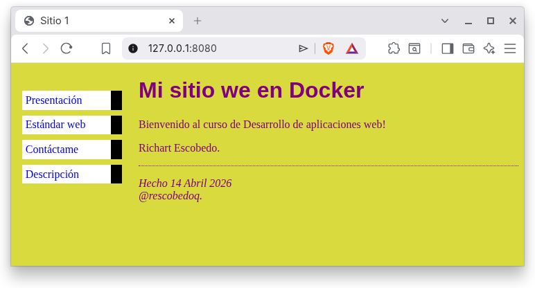
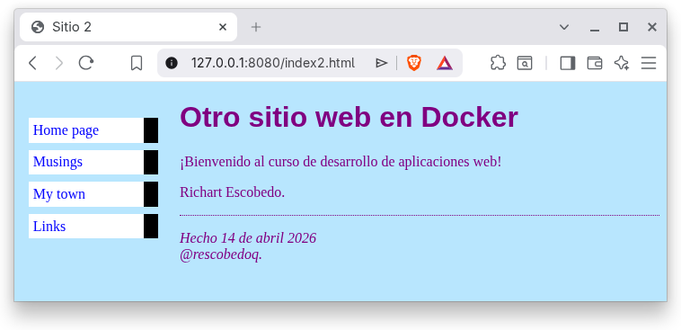

| Autores | Rol | Porcentaje |
|---|---|---|
| Richart Escobedo | Desarrollador web de todo el laboratorio. | 100% |
| Entregables | URL |
|---|---|
| Repositorio | https://github.com/rescobedoq/daw.git |
| Laboratorio | https://github.com/rescobedoq/daw/tree/main/lab01 |
| Informe | https://github.com/rescobedoq/daw/blob/main/lab01/DAW_lab01.pdf |
| Video | https://youtu.be/1SThw3yJy9g |
docker build . -t i_daw_8080docker run -d --name c_daw_8080 -p 8080:80 i_daw_8080http://127.0.0.1:8080/http://127.0.0.1:8080/index2.htmlhttp://10.7.46.185:8080/http://10.7.46.185:8080/index2.htmldocker stop c_daw_8080docker rm c_daw_8080docker rmi i_daw_8080docker build -f Dockerfile2 . -t i_daw_8080docker rm -f $(docker ps -aqf "name=^c_daw_8080$") && docker rmi i_daw_8080

| ítem | Descripción | Puntaje |
|---|---|---|
| Informe | El informe está completo, utiliza la plantilla y tiene un acabado impecable. | 5 |
| Video | El video es preciso y muestra la ejecución del contenedor en la terminal y la navegación por la aplicación web. | 2 |
| GitHub | El repositorio contiene todos los archivos necesarios para el despliegue y muestra un orden y un manejo acordes con los estándares de codificación. | 10 |
| README | El laboratorio tiene un README.md necesario para desplegar la aplicación web. | 3 |
| Prueba2 | Se tomaron en cuenta todas las consideraciones y recomendaciones, lo que evidencia un trabajo en equipo. | -0 |
Un video debe cargarse en Youtube o Drive y sólo debe entregarse la URL pública, sin que se solicite login alguno. Es recomendable incluir la URL tanto en el README.md como en el informe.↩︎
El docente debe comprobar el cumplimiento de todas las consideraciones y recomendaciones, evidenciando el trabajo en equipo con responsabilidad y la práctica de la ética profesional, a fin de no aplicar ninguna penalidad.↩︎